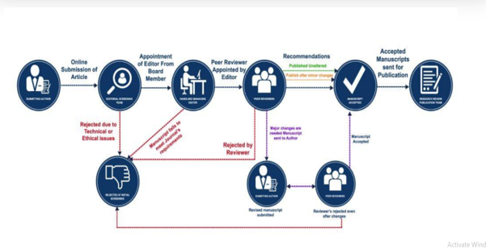
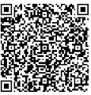

The International Journal of Retailing and Marketing (IJRM) is an international, peerreviewed, open-access scholarly journal dedicated to publishing high-quality, original, and innovative research in the fields of retailing, marketing, management, commerce, business, and allied disciplines. The journal provides a global platform for academicians, researchers, industry professionals, policymakers, and practitioners to exchange knowledge, share research findings, and discuss emerging trends, challenges, and best practices in business and marketing.
IJRM is committed to promoting academic excellence through the publication of original research articles, review papers, case studies, conceptual papers, short communications, and book reviews that contribute to the advancement of theory and practice. The journal follows a rigorous Double-Blind Peer Review process to ensure the quality, originality, and integrity of every published manuscript.
The journal welcomes interdisciplinary research that bridges the gap between academic research and industry practice. It encourages studies that provide theoretical insights, practical implications, and evidence-based recommendations for businesses, policymakers, and society.
The International Journal of Retailing and Marketing (IJRM) aims to:
Promote high-quality research in retailing, marketing, commerce, business, and management.
Encourage interdisciplinary and innovative research addressing contemporary business challenges.
Provide an international platform for researchers, academicians, professionals, and policymakers to disseminate scholarly work.
Foster collaboration between academia and industry.
Support evidence-based decision-making through rigorous scientific research.
Contribute to the advancement of knowledge and professional practice in business and management disciplines.
Read MoreDear Esteemed Researchers,
Knowledge grows when it is shared. We are delighted to invite authors from around the world to publish their original research in IJAQC & IJRM. Our journals provide an international platform for the dissemination of high-quality, peer-reviewed research that contributes to academic excellence and practical innovation.
We uphold the highest standards of publication ethics, transparency, and scholarly integrity. Every manuscript is evaluated through a rigorous double-blind peer review process to ensure originality, quality, and relevance.
We sincerely welcome your contributions and look forward to collaborating with you in advancing global research.
With Best Regards,
Prof(Dr) Shankar Lal Gupta
Chief -Editor
International Journal of Retailing and Marketing (IJRM)
Email Id - radianteducationtrust@gmail.com & drslgupta@gmail.com
Phone no - +91-8796278474
Prof (Dr) S.L. Gupta
Former Professor and Former Director,
Birla Institute of Technology, Noida
Founder & Chairman - Radiant Education Trust
Prof (Dr). D. D. Chaturvedi
Professor in Economics
SGGSCC, DU Delhi
Email: ddchaturvedi64@gmail.com
Dr. Piali Haldar
Associate Professor, Department of Management,
Brainware University, Kolkata
Email: pialihaldar@gmail.com
Radiant Education Trust is pleased to invite researchers, academicians, faculty members, industry professionals, and research scholars to submit their original and unpublished research papers for publication in its Double Blind reviewed international journal with DOI Indexed.
At present, the journal is registered with and provides DOI (Digital Object Identifier) through Crossref for all published articles. We are committed to maintaining high publishing standards.
As the journal grows and meets the necessary eligibility criteria, we will apply for inclusion in leading international indexing and abstracting databases such as Scopus, Web of Science, DOAJ, EBSCO, ProQuest, Google Scholar, Dimensions, and other recognized indexing services.
Areas of Submission
Strategic Preparation and Entry Modes for Retailing
Retail Market Analysis
Retailing: Trends and Issues
Retail Formats
Retail Environment
Retail Competition
Retail Logistics
Retail Buying and Merchandising
Retail Store Design
Store Operations Management
Supply Chain Management
Retail Branding
Shoppers' (Retail Consumers) Behaviour
Legal, Social and Ethical Issues in Retailing
Retail Pricing
Retail Branding Decisions
Retail Positioning
Retail Advertising and Promotions in Markets
Customer Services and Quality Management in Retailing
E-Tailing (Electronic Retailing) and Retail Internationalisation
CRM in Retailing
Human Resource Management in Retailing
Retail Research
Financing Decisions in Retailing
AI in Retailing
Advertising and Sales Promotion
Sales and Distribution Management
Consumer Behaviour
Services Marketing
International Research
Brand Management
Customer Relationship Management
Rural Marketing
Product Management
Electronic Marketing
AI in Marketing
Submission Deadline: 10 July 2026
Article Processing Charges (APC): Nominal APC applicable.
Email: radianteducationtrust@gmail.com
Website: https://radianteducation.org
Radiant Education Trust, established in 2008, is a charitable and educational organisation dedicated to promoting quality education, skill development, research, and community empowerment. The Trust is registered under Udyam Registration, verified by NITI Aayog (NGO Darpan), ISO 9001:2015 Certified, and registered under Sections 12A and 80G of the Income Tax Act.
Through educational programs, internships, online learning initiatives, research activities, and community development projects, the Trust is committed to fostering academic excellence, innovation, employability, and inclusive social progress.
Dr. Seema Gupta
Publisher & Owner
Sector-48, Noida (U.P.)
There will be no APC for the first two issues.
Papers may cite COPE, ICMJE, and DOAJ best practices explicitly.
Author contribution (CRediT), funding, conflicts of interest, data availability, and AI disclosure policies will be applicable.
Author Guidelines are attached.
Thank You
Publisher: RIMT (A Unit of Radiant Education Trust)
Publication Frequency: Quarterly
Publication Model:Double-Blind Peer Reviewed as per UGC norms
Language:English
Version: 1.0 (2026)
At present, the journal is registered with and provides DOI (Digital Object Identifier) through Crossref for all published articles. We are committed to maintaining high publishing standards.
As the journal grows and meets the necessary eligibility criteria, we will apply for inclusion in leading international indexing and abstracting databases such as Scopus, Web of Science, DOAJ, EBSCO, ProQuest, Google Scholar, Dimensions, and other recognized indexing services
The International Journal of Retailing and Marketing (IJRM) is an international, peer-reviewed scholarly journal dedicated to publishing high-quality theoretical, empirical, and interdisciplinary research in retailing, marketing, digital commerce, and emerging business technologies. The journal provides a global platform for researchers, academicians, industry professionals, and policymakers to share innovative ideas and practical solutions in areas such as Artificial Intelligence, Generative AI, Retail Analytics, and Consumer Behaviour, Omni channel Commerce, Sustainability, and Digital Transformation. IJRM encourages original research that advances knowledge and bridges the gap between academic research and industry practice in the rapidly evolving global marketplace
| Type | Recommended Length |
|---|---|
| Original Research Article | 5,000-8,000 words |
| Review Article | 6,000-10,000 words |
| Short Communication | 2,000-3,500 words |
| Case Study | 3,000-5,000 words |
Authors shall submit:
Cover Letter
Manuscript (Microsoft Word)
Title Page
Ethical Approval Statement (where applicable)
The manuscript must not be under review by another journal.
Authors should prepare their manuscripts according to the following guidelines:
Language: Use British English consistently throughout the manuscript.
File Format: Microsoft Word (.doc or .docx). PDF files are not accepted for initial submission.
Page Size: A4
Margins: Top: 2.5 cm, Bottom: 2.5 cm, Left: 2.5 cm, Right: 2.5 cm
Font: Times New Roman, 12 pt, English
Line Spacing: 1.5
Alignment: Justified
Page Numbers: Bottom Centre
The manuscript should be organised according to the following structure:
Title: Maximum 20 words. The title should be concise, informative, searchable, and free from abbreviations where possible.
Author Information: Provide separately on the title page, including Full Name, Designation, Department, Institution, Country, Email Address, and Corresponding Author details.
Abstract: 150-250 words and should include Background, Objective, Methodology, Results, and Conclusion. Citations should not be included.
Keywords: Provide 5-7 keywords arranged alphabetically.
Introduction: Include background, research gap, problem statement, objectives, and contribution of the study.
Literature Review: Present previous studies, critical analysis, and identify the research gap.
Research Methodology: Describe the research design, sample, variables, data collection methods, tools, statistical techniques, and software used.
Results: Present findings using tables, figures, graphs, and statistical analyses where appropriate.
Discussion: Explain the interpretation of findings, comparison with earlier studies, and practical and theoretical implications.
Conclusion: Include major findings, contributions, limitations, and future research directions.
Tables should:
Be numbered consecutively.
Have concise titles.
Be cited in the text
Use editable text (not images).
Example: Table1. AI Model Performance
Figures should:
Be high resolution (minimum 300 dpi).
Be numbered consecutively.
Include descriptive captions.
Be cited in the manuscript.
Equations should:
Be editable.
Be numbered consecutively.
Use Microsoft Equation Editor or Math Type
Spell out abbreviations at first use.
Example: Artificial Intelligence (AI), Quantum Computing (QC), Cyber Security (CS)
IJRM follows the APA 7th Edition referencing style.
Gupta, S. L., & Sharma, R. (2026). Artificial intelligence in higher education. International Journal of Artificial Intelligence, 2(1), 10-25.
Gupta, S. L. (2025). Artificial Intelligence in Marketing. New Delhi: XYZ Publications.
Reference managers such as Zotero, EndNote, or Mendeley are recommended for maintaining citation consistency.
Authors shall confirm:
Original work
No simultaneous submission
Ethical approval where applicable
Informed consent where applicable
Proper citation
Accurate reporting
Every manuscript will undergo plagiarism screening.
Editorial guidance:
Up to 10% similarity is generally acceptable with proper attribution.
The decision depends on the quality and source of the matching text, not only on the percentage of similarity.
The method used to determine the content of a manuscript before it is published online is the peer review process. Independent professionals/experts/researchers in the related research sector are expected to evaluate the uniqueness, validity and relevance of the submitted manuscripts to assist editors in deciding whether a manuscript should be published in their journal
This process of peer review helps validate the research work, create a method by which it can be assessed and expand the possibilities of networking within research communities. Despite criticism, peer review is still the most generally accepted means of validating science
Only papers submitted with bibliographic reasoning that follow good scientific criteria, explanations, records and proof of their work (e.g. understanding and building on other work in the field, relying on rational reasoning and well-designed experiments, supporting statements with evidence, etc.) are approved for publication in the Journal.

We usually follow the method of double-blind peer review, in which both the authors and the editors who will review the submitted papers and authorize them for publication are unaware of the identity of each other.
The editor of the journal assigns the papers obtained from the researchers to the reviewers in this process, in which the reviewers are initially expected to check the scope of the manuscript, whether it suits the journal or not, to provide their comments or any suggestions/edits in the paper (if necessary) to accept the manuscript for publication in the journal.
This constitutes the basis for determining if the work should be approved, revised as acceptable, or rejected. Submissions with significant shortcomings would be rejected, but after they have been thoroughly revised, they can be re-submitted.
This does not necessarily mean it is of low quality if a job is refused. A paper can also be rejected because it does not fall within the specialis ation field of the journal or because it does not meet the high expectations of innovation and originality that the journal in question demands.
If the reviewer recommends only minor edits, the journal will publish the article, but the author is asked to make certain corrections before that.
International Journal of Retailing and Marketing (IJRM)
The International Journal of Retailing and Marketing (IJRM) sincerely appreciates the valuable contribution of its reviewers in maintaining the quality, credibility, and integrity of scholarly publishing.
IJRM follows a rigorous Double-Blind Peer Review process in which the identities of both authors and reviewers remain confidential throughout the review process.
The primary objectives of peer review are to:
Evaluate the originality and significance of submitted research.
Assess the scientific quality, methodological rigor, and practical relevance of the manuscript.
Ensure compliance with ethical research and publication standards.
Improve manuscript quality through constructive and unbiased feedback.
Assist the Editorial Board in making informed publication decisions.
Promote excellence in retailing, marketing, management, commerce, business, and allied disciplines.
Reviewers are expected to:
Conduct objective, impartial, and constructive evaluations.
Maintain strict confidentiality throughout the review process.
Accept review assignments only within their area of expertise.
Complete reviews within the assigned timeframe.
Provide detailed comments supported by academic reasoning.
Identify the strengths and weaknesses of the manuscript.
Recommend improvements that enhance the quality of the research.
Declare any actual or potential conflicts of interest.
Inform the Editor immediately if plagiarism, duplicate publication, data fabrication, image manipulation, unethical research practices, or other forms of publication misconduct are suspected.
All manuscripts received for review are confidential documents.
Reviewers shall not:
Share manuscripts with any third party.
Discuss unpublished research with colleagues or others.
Use unpublished information for personal, academic, or commercial advantage.
Contact the authors directly regarding the manuscript.
Confidentiality must be maintained before, during, and after the peer-review process.
Reviewers should decline an invitation to review if they have any conflict of interest, including:
Personal or family relationships with the authors.
Institutional affiliation with the authors.
Financial interests.
Current or recent research collaboration.
Academic competition or professional rivalry.
Any circumstance that may compromise an independent and impartial review.
All potential conflicts of interest must be disclosed to the Editorial Office.
Reviewers should immediately report any evidence of:
Plagiarism.
Self-plagiarism.
Duplicate publication.
Data fabrication or falsification.
Citation manipulation.
Image manipulation.
Ethical violations involving research participants.
Undisclosed conflicts of interest.
Copyright infringement.
Does the manuscript present original research or new insights?
Is the study relevant to the aims and scope of IJRM?
Is the literature review comprehensive, current, and appropriate?
Is the research design suitable and scientifically sound?
Are sampling techniques, data collection methods, and statistical analyses appropriate?
Are the findings clearly presented and supported by evidence?
Are tables, figures, and statistical analyses accurate and relevant?
Are the findings interpreted logically and compared with previous studies?
Are practical implications adequately discussed?
Are the conclusions supported by the results?
Does the manuscript clearly state its contribution to knowledge?
Are references accurate, relevant, and formatted according to the journal guidelines?
Is the manuscript written in clear, professional, and grammatically correct English?
After completing the evaluation, reviewers should recommend one of the following:
Accept without Revision
Accept with Minor Revisions
Major Revisions Required
Reject
Review comments should:
Be professional, objective, and respectful.
Focus on improving the manuscript.
Avoid personal criticism of the authors.
Be specific, clear, and evidence-based.
Offer practical suggestions wherever possible.
Respond promptly to review invitations.
Complete reviews within the specified deadline.
Inform the Editorial Office immediately if additional time is required.
Timely reviews contribute to an efficient publication process and enhance the author experience.
Reviewers must not upload confidential manuscripts or any part of them to publicly available AI tools or platforms.
If AI-assisted tools are used solely for language support, reviewers remain fully responsible for maintaining confidentiality, ensuring accuracy, and providing an independent academic evaluation.
The final review report must always reflect the reviewer's own professional judgment.
Official Reviewer Certificate.
Annual Certificate of Appreciation.
Outstanding Reviewer Award.
Recognition on the journal website (with reviewer consent).
Opportunity to join the Editorial Board based on outstanding performance.
Priority consideration for future editorial responsibilities.
Reviewer recommendations are advisory in nature. The final decision regarding acceptance, revision, or rejection of a manuscript rests solely with the Editor-in-Chief.
Reviewers are expected to uphold the highest standards of:
Integrity
Objectivity
Fairness
Confidentiality
Professionalism
Transparency
Accountability
Respect for Intellectual Property
Academic Excellence
The International Journal of Retailing and Marketing (IJRM) is committed to maintaining an ethical, transparent, and internationally recognized peer-review system.
Through the dedication of qualified reviewers, the journal strives to publish innovative, high-quality, and impactful research that advances knowledge in retailing, marketing, management, commerce, business, and allied disciplines.
The Editorial Board sincerely thanks all reviewers for their valuable time, expertise, and commitment to maintaining the highest standards of scholarly publishing.
International Journal of Retailing and Marketing (IJRM)
The International Journal of Retailing and Marketing (IJRM) follows a rigorous Double-Blind Peer Review process to ensure the publication of high-quality, original, ethical, and scientifically sound research.
In this process, the identities of both authors and reviewers remain confidential throughout the review process to maintain fairness, impartiality, and academic integrity.
The objective of peer review is to evaluate the originality, quality, relevance, methodological rigor, and scholarly contribution of submitted manuscripts while providing constructive feedback to authors for improving their work.
Upon submission, every manuscript undergoes an initial editorial assessment conducted by the Editor-in-Chief or an Associate Editor.
During this stage, the manuscript is evaluated for:
Relevance to the aims and scope of IJRM.
Originality and academic significance.
Compliance with the journal's submission guidelines.
Quality of English language and presentation.
Ethical compliance and publication standards.
Plagiarism screening using plagiarism detection software.
Manuscripts that fail to meet these requirements may be rejected without external peer review. Authors are generally notified within 5-7 working days.
Manuscripts that successfully pass the initial screening are assigned to an Associate Editor or Subject Editor with expertise in the relevant research area.
The Associate Editor assesses whether the manuscript is suitable for peer review and identifies qualified independent reviewers.
Each eligible manuscript is sent to a minimum of two independent expert reviewers possessing relevant academic and research expertise.
During the review process:
Authors remain anonymous to reviewers.
Reviewers remain anonymous to authors.
Reviewers evaluate manuscripts solely on academic merit.
Personal identity, affiliation, nationality, gender, or other non-academic factors shall not influence the review outcome.
Reviewers are requested to assess manuscripts based on:
Originality and novelty of the research.
Relevance to retailing, marketing, business, management, commerce, and allied disciplines.
Significance and contribution to existing knowledge.
Adequacy of literature review.
Research design and methodology.
Data analysis and interpretation.
Validity and reliability of findings.
Practical and theoretical implications.
Quality of writing, organization, and presentation.
Accuracy of references and citations.
Ethical compliance.
Reviewers may recommend one of the following decisions:
Accept without revisions.
Accept subject to minor revisions.
Major revisions required and resubmission.
Reject the manuscript.
The final publication decision rests solely with the Editor-in-Chief based on reviewers' reports and editorial evaluation.
When revisions are requested, authors shall submit:
A revised manuscript.
A detailed response to reviewers' comments.
A point-by-point explanation of all revisions made.
Revised manuscripts may be returned to the original reviewers whenever necessary.
The Editor-in-Chief may decide to:
Accept the manuscript for publication.
Request further revisions.
Reject the manuscript.
The Editor's decision shall be final.
| Stage | Expected Time |
|---|---|
| Initial Editorial Screening | 5-7 Working Days |
| Peer Review Process | 2-4 Weeks |
| Author Revision | 1-3 Weeks |
| Final Editorial Decision | 5-10 Working Days |
| Online Publication after Acceptance | Within 7 Days |
Actual timelines may vary depending on reviewer availability and the extent of revisions required.
Maintain complete confidentiality.
Conduct objective, unbiased, and constructive reviews.
Declare any conflict of interest before accepting a review assignment.
Decline review invitations when lacking appropriate expertise.
Complete reviews within the agreed timeframe.
Report suspected plagiarism, duplicate publication, data fabrication, image manipulation, or ethical concerns.
Avoid using unpublished information for personal or professional advantage.
All submitted manuscripts and related materials are treated as confidential documents. Editors and reviewers shall not disclose, discuss, distribute, or use any unpublished material except for the purpose of scholarly review.
Editors and reviewers must disclose any actual or potential conflicts arising from:
Personal relationships.
Professional collaborations.
Institutional affiliations.
Financial interests.
Academic competition.
Individuals with conflicts of interest shall not participate in the review or editorial decision-making process.
Peer review shall be conducted according to internationally accepted ethical publishing standards, ensuring:
Fairness.
Transparency.
Confidentiality.
Academic integrity.
Professional responsibility.
IJRM is committed to maintaining the highest standards of scholarly publishing through an independent, objective, and ethical peer review system that supports excellence in academic research.
International Journal of Retailing and Marketing (IJRM)
The International Journal of Retailing and Marketing (IJRM) is committed to the principles of open access publishing, ensuring that high-quality scholarly research is freely and permanently accessible to researchers, academicians, practitioners, policymakers, students, and the general public worldwide.
All articles published in IJRM are made available immediately upon publication without any subscription, registration, or access fees. Readers are free to read, download, copy, distribute, print, search, or link to the full text of articles for lawful academic and non-commercial purposes, provided that appropriate credit is given to the original author(s) and the journal.
The journal promotes open access to:
Enhance the global dissemination of research findings.
Increase the visibility, accessibility, and citation of published articles.
Encourage collaboration among researchers, industry professionals, and policymakers.
Support innovation and knowledge sharing in retailing, marketing, management, and allied disciplines.
Contribute to the advancement of education and evidence-based research.
Immediate worldwide accessibility without financial or geographical barriers.
Greater visibility and readership of published research.
Increased citation potential and academic impact.
Faster dissemination of new knowledge.
Long-term preservation and accessibility of scholarly content.
Authors retain the copyright of their published work while granting IJRM the non-exclusive right to publish, archive, and disseminate the article through its website and other scholarly platforms.
Authors may also:
Share the published version on personal websites, institutional repositories, and academic networking platforms.
Use their published work for teaching, research, conference presentations, dissertations, and future scholarly publications with appropriate citation.
Reproduce parts of their work in books or other academic publications with proper acknowledgment of the original publication in IJRM.
Readers may freely:
Read and download articles.
Print copies for personal or educational use.
Cite published work in accordance with accepted academic standards.
Share links to published articles.
Use the content for research, teaching, and non-commercial educational purposes with proper attribution.
IJRM follows the Gold Open Access publishing model, under which all accepted articles are published online with unrestricted access immediately after publication. The journal does not impose any embargo period on published content.
Unless otherwise stated, articles published in IJRM are distributed under the applicable journal licensing policy. Authors and users are expected to comply with the terms of the selected publication license and provide appropriate attribution whenever the work is reused.
To ensure the long-term preservation and accessibility of published research, IJRM maintains digital archiving of all published articles.
Published content remains permanently accessible through the journal's official website and associated scholarly repositories, ensuring continuous availability to the global research community.
The International Journal of Retailing and Marketing (IJRM) is dedicated to promoting ethical, transparent, and unrestricted scholarly communication by providing free and permanent access to quality research.
Through its open access policy, the journal aims to foster academic excellence, innovation, and the global exchange of knowledge in the fields of retailing, marketing, commerce, management, business, and related disciplines.
International Journal of Retailing and Marketing (IJRM)
The International Journal of Retailing and Marketing (IJRM) is committed to maintaining the highest standards of publication ethics, research integrity, transparency, and professional conduct.
IJRM follows the ethical principles and best practices recommended by the Committee on Publication Ethics (COPE) and promotes honesty, originality, accountability, fairness, and academic integrity throughout the publication process.
The Editor-in-Chief and Editorial Board shall:
Evaluate manuscripts solely on academic merit, originality, relevance, methodological quality, and contribution to the discipline.
Make editorial decisions without discrimination based on nationality, race, gender, religion, institutional affiliation, political beliefs, or personal characteristics.
Ensure a fair, unbiased, confidential, and timely double-blind peer review process.
Maintain confidentiality of submitted manuscripts and reviewer identities.
Select qualified reviewers with appropriate subject expertise.
Take action in cases involving plagiarism, duplicate publication, data fabrication, falsification, unethical research practices, or publication misconduct.
Avoid conflicts of interest and recuse themselves where such conflicts exist.
Publish corrections, retractions, expressions of concern, or clarifications whenever necessary.
Preserve editorial independence and prevent external influence on editorial decisions.
Authors submitting manuscripts to IJRM shall:
Submit only original and unpublished work not under consideration elsewhere.
Ensure that all data, findings, analyses, and conclusions are accurately and honestly reported.
Properly acknowledge and cite the work of others.
Avoid plagiarism, self-plagiarism, duplicate publication, data fabrication, falsification, and image manipulation.
Ensure that all listed authors have made substantial academic contributions.
Identify one corresponding author for communication with the journal.
Disclose funding sources and potential conflicts of interest.
Obtain ethical approvals, permissions, and informed consent where applicable.
Notify the Editor if significant errors are discovered after publication.
Retain original research data and provide it when requested.
Authorship should be limited to individuals who have made significant intellectual contributions, including:
Conceptualization and study design.
Data collection or acquisition.
Data analysis and interpretation.
Preparation or critical revision of the manuscript.
Final approval of the manuscript for publication.
Individuals providing only financial support, administrative assistance, language editing, or general supervision should be acknowledged appropriately but should not be listed as authors.
Conduct objective, constructive, and unbiased evaluations.
Maintain strict confidentiality regarding submitted manuscripts.
Accept review assignments only within their expertise.
Complete reviews within the agreed timeframe.
Identify relevant published work not cited by the authors.
Inform the Editor of suspected plagiarism or ethical concerns.
Declare conflicts of interest and decline reviews where appropriate.
Avoid using unpublished information for personal or professional benefit.
Ensuring editorial independence.
Supporting fair and transparent editorial processes.
Protecting intellectual property rights.
Maintaining the integrity of published content.
Preserving digital archives of published articles.
Cooperating in investigations of publication misconduct.
Publishing corrections, retractions, or notices when required.
Any form of misconduct including the following shall be considered serious ethical violations:
Plagiarism
Data fabrication
Data falsification
Image manipulation
Citation manipulation
Duplicate submission
Redundant publication
Undisclosed conflicts of interest
Such violations may result in rejection, retraction, notification to institutions, or other appropriate actions.
Where applicable, authors must confirm that:
Ethical approval was obtained from the appropriate institutional ethics committee.
Human participants provided informed consent.
Confidentiality and privacy of research participants were protected.
Research involving animals complied with applicable ethical guidelines.
Authors shall include an ethical approval statement within the manuscript whenever required.
All authors, reviewers, editors, and editorial board members must disclose any financial, professional, institutional, or personal relationships that could influence their responsibilities during the publication process.
Where a conflict exists, appropriate measures shall be taken to ensure an independent and unbiased editorial decision.
IJRM investigates all allegations of publication misconduct seriously and confidentially.
The journal may take one or more of the following actions:
Reject the manuscript.
Request corrections from the authors.
Publish a correction or corrigendum.
Retract the published article.
Notify the author's institution or funding agency.
Suspend future submissions from the author(s) for an appropriate period.
Inform relevant academic or professional bodies where necessary.
All investigations shall be conducted fairly, objectively, and according to internationally accepted ethical publishing practices.
The International Journal of Retailing and Marketing (IJRM) is committed to fostering a culture of honesty, transparency, fairness, accountability, and academic excellence.
By adhering to these ethical principles, the journal seeks to ensure the credibility, reliability, and long-term value of the scholarly work it publishes while contributing to the advancement of knowledge in retailing, marketing, business, management, commerce, and related disciplines.
International Journal of Retailing and Marketing (IJRM)
The International Journal of Retailing and Marketing (IJRM) is committed to maintaining the accuracy, integrity, and reliability of the scholarly record. Despite rigorous editorial screening and peer review, errors may occasionally be identified after publication.
Corrections shall be made only when they materially affect the accuracy, interpretation, or integrity of the published work. Minor typographical or formatting errors that do not alter the scientific or scholarly content generally do not warrant formal correction.
The purpose of article corrections is to:
Preserve the integrity of the scholarly record.
Correct significant factual or publishing errors.
Maintain transparency in scholarly communication.
Ensure readers have access to accurate and reliable research.
Protect the credibility of authors, reviewers, editors, and the journal.
An Erratum is issued when a significant error has been introduced during the editorial or production process by the journal or publisher.
Examples include:
Incorrect author names or affiliations.
Errors in article title or abstract.
Mistakes in figures, tables, or equations introduced during production.
Missing acknowledgements or funding information due to editorial oversight.
Formatting errors affecting interpretation of the article.
Errata will be published promptly and linked to the original article.
A Corrigendum is issued when authors identify a significant error in their published article that affects the accuracy or clarity of the work but does not invalidate the overall findings.
Examples include:
Incorrect data values.
Errors in references or citations.
Incorrect descriptions of methods.
Mistakes in figures or tables prepared by the authors.
Errors in statistical calculations that do not alter the main conclusions.
All authors must approve and submit the corrigendum before publication.
An Addendum provides additional information that enhances or clarifies a published article but does not alter its original conclusions.
Examples include:
Additional methodological details.
Clarification requested by readers.
Supplementary information omitted unintentionally during submission.
Newly available supporting information relevant to the published work.
Addenda are subject to editorial review and, where necessary, peer review.
A Retraction is issued when a published article is found to contain serious ethical or scientific problems that render its findings unreliable.
Retraction may occur in cases involving:
Research misconduct.
Data fabrication or falsification.
Plagiarism.
Duplicate or redundant publication.
Serious methodological errors.
Unethical research practices.
Unauthorized use of copyrighted material.
Fraudulent authorship or manipulation of the peer review process.
Retraction notices will remain permanently linked to the original article to preserve the integrity of the scholarly record.
The Editor may publish an Expression of Concern when there is credible evidence suggesting possible misconduct or significant issues with a published article, but the investigation has not yet been completed.
Once the investigation concludes, the journal may publish:
A correction.
A retraction.
A notice confirming that no further action is required.
Authors wishing to request a correction should submit:
A formal written request to the Editorial Office.
The article title, DOI (if assigned), volume, issue, and publication details.
A detailed explanation of the error.
The proposed corrected text or data.
Supporting evidence, where applicable.
All correction requests are evaluated by:
Editor-in-Chief
Associate Editors
Editorial Board Members
Independent reviewers (where necessary)
The journal reserves the right to determine the appropriate form of correction based on the seriousness of the error.
When corrections are approved:
A formal correction notice will be published.
The correction will be electronically linked to the original article.
The publication history will remain transparent.
Readers will be able to identify both the original and corrected records.
The journal does not replace or remove published articles except in exceptional legal or ethical circumstances.
The following generally do not require formal correction:
Minor spelling mistakes.
Grammatical errors.
Formatting inconsistencies.
Minor punctuation errors.
Stylistic improvements.
Carefully review proofs before publication.
Promptly notify the journal upon discovering significant errors.
Cooperate fully during correction investigations.
Provide accurate supporting documentation when requested.
Failure to disclose known errors may constitute publication misconduct.
Investigate correction requests fairly and promptly.
Maintain transparency throughout the correction process.
Ensure published corrections are accurately linked to the original article.
Follow internationally accepted publication ethics when handling corrections and retractions.
IJRM is committed to preserving the integrity of the scholarly record. All corrections, corrigenda, errata, addenda, expressions of concern, and retractions will remain permanently accessible and clearly associated with the original published article.
The Editorial Board reserves the right to revise or update this Article Correction Policy periodically to reflect evolving international publishing standards, ethical guidelines, and best practices.
By publishing with IJRM, authors acknowledge and agree to comply with this Article Correction Policy.
International Journal of Retailing and Marketing (IJRM)
The International Journal of Retailing and Marketing (IJRM) is committed to upholding the highest standards of academic integrity, originality, and ethical publishing. Plagiarism in any form is considered a serious violation of publication ethics and is not tolerated.
All manuscripts submitted to IJRM must represent the original work of the author(s). Authors are responsible for ensuring that their submissions are free from plagiarism, duplicate publication, data fabrication, falsification, and other forms of academic misconduct.
Plagiarism is the presentation of another person's ideas, words, data, figures, images, tables, or intellectual work as one's own without appropriate acknowledgment or permission.
Plagiarism includes, but is not limited to:
Copying text without proper citation.
Paraphrasing another author's work without appropriate acknowledgment.
Using published data, figures, tables, or images without permission or attribution.
Submitting another person's work as one's own.
Purchasing or commissioning research papers.
Translating published work into another language without proper citation.
Reusing substantial portions of one's own previously published work without disclosure (self-plagiarism).
Every manuscript submitted to IJRM undergoes plagiarism screening before entering the peer review process using recognized plagiarism detection software such as Crossref Similarity Check (iThenticate) or equivalent similarity detection tools.
The similarity report is evaluated by the Editorial Office to distinguish legitimate citations and references from unethical copying.
A high similarity percentage does not automatically indicate plagiarism; each report is assessed carefully in context.
| Similarity Index | Editorial Action |
|---|---|
| Up to 10% | Generally acceptable, subject to editorial evaluation. |
| 11% - 20% | Authors may be requested to revise and reduce similarity before peer review. |
| Above 20% | Manuscript may be rejected due to excessive similarity or suspected plagiarism. |
Regardless of the overall similarity score, copying from a single source, unattributed text, or evidence of intentional plagiarism may result in immediate rejection.
The Editor-in-Chief reserves the right to make the final decision based on the nature and extent of the overlap.
Authors must avoid self-plagiarism by ensuring that previously published material is not reproduced without:
Proper citation.
Appropriate quotation where necessary.
Disclosure to the journal.
Significant new scholarly contribution.
Submitting substantially the same manuscript simultaneously to multiple journals or publishing duplicate versions of the same research constitutes unethical publishing practice.
The use of Artificial Intelligence (AI) tools for language improvement, grammar checking, or editing may be acceptable when used responsibly.
AI tools shall not be listed as authors.
Authors remain fully responsible for the originality, accuracy, and integrity of the manuscript.
AI-generated text, images, data, references, or analyses must not be presented as original scholarly work without appropriate disclosure where required.
The use of AI must not result in plagiarism, fabricated references, or inaccurate information.
If plagiarism or publication misconduct is detected before publication, IJRM may:
Reject the manuscript immediately.
Request revision and proper citation where the overlap is minor and unintentional.
Suspend the review process pending investigation.
Notify all authors regarding the findings.
If plagiarism is identified after publication, the journal may:
Publish a correction or clarification.
Retract the article.
Remove the article from active publication where legally required.
Notify the author's institution, employer, funding agency, or relevant academic authority.
Prohibit future submissions from the responsible author(s) for an appropriate period.
Authors are expected to:
Submit only original and unpublished work.
Properly acknowledge all sources used.
Obtain permission where copyrighted material is reproduced.
Ensure the authenticity of data and research findings.
Verify originality before submission.
Cooperate fully with any investigation regarding suspected plagiarism.
Submission of a manuscript to IJRM constitutes a declaration that the work is original and has not been copied from any published or unpublished source without proper acknowledgment.
Reviewers and editors are expected to:
Report suspected plagiarism or duplicate publication.
Maintain confidentiality during investigations.
Evaluate similarity reports objectively.
Follow fair and unbiased procedures while handling ethical concerns.
Editorial decisions shall be based on evidence and internationally accepted ethical publishing practices.
All allegations of plagiarism are investigated confidentially by the Editorial Office.
The investigation may include:
1. Examination of the similarity report.
2. Comparison with the original source(s).
3. Communication with the corresponding author.
4. Review by the Editor-in-Chief and Editorial Board, if necessary.
5. Final editorial decision based on the available evidence.
Authors will be given an opportunity to respond before any final action is taken.
Depending on the severity of the misconduct, IJRM may impose one or more of the following actions:
Manuscript rejection.
Mandatory revision.
Withdrawal before publication.
Publication of a correction or retraction.
Temporary or permanent prohibition on future submissions.
Notification to the author's institution or relevant academic authorities.
Other actions considered appropriate under international publication ethics standards.
The International Journal of Retailing and Marketing (IJRM) is dedicated to promoting originality, ethical scholarship, and responsible research publication.
The journal encourages authors, reviewers, editors, and readers to uphold the principles of honesty, transparency, fairness, and academic integrity in all aspects of scholarly communication.
By submitting a manuscript to IJRM, authors acknowledge that they have read, understood, and agreed to comply with this Plagiarism Policy and accept responsibility for the originality and authenticity of their work.
Assistant Professor
Department of Management Studies, School of Entrepreneurship & Management, HBTU, KanpurHead – Corporate Readiness
Kirloskar Institute of Management, PuneAssistant Professor
C-DAC, NoidaProfessor
Lingaya's Vidyapeeth, Faridabad, HaryanaAssociate Professor
Bennett University, Greater Noida, Uttar PradeshAssistant Professor & Research Supervisor
Department of Management Studies, Visvesvaraya Technological University Research Resource Centre, Muddenahalli, Chikkaballapur, KarnatakaAssociate Professor
ICFAI University, JharkhandAssociate Professor
Punjab College of Technical Education, Ludhiana, PunjabAssistant Professor in Economics
Faculty of Commerce and Management, St. Xavier's University, KolkataAssociate Professor, Department of Commerce
Shrimathi Devkunvar Nanalal Bhatt Vaishnav College for Women, ChennaiAssistant Professor, Department of B.Com (Accounting and Finance)
Shrimathi Devkunvar Nanalal Bhatt Vaishnav College for Women, Chennai